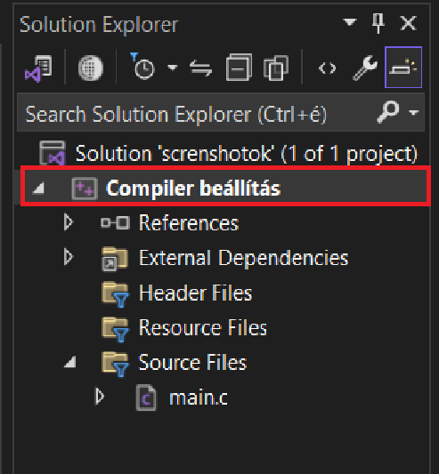
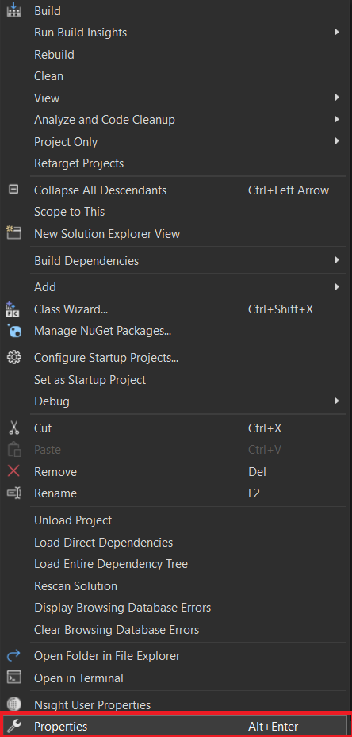
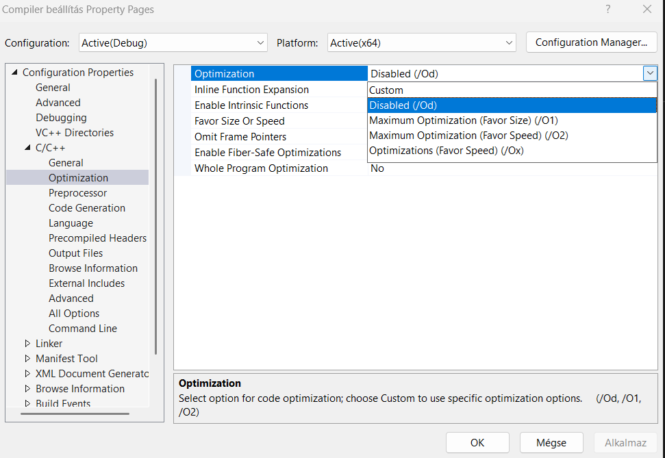

Labor 11
C programozással kapcsolatos vizsgakérdések (16 db)
Bináris fileok
Teljesítménymérés
Programtervezés, kódszervezés
sima C kód optimalizálása CPU-ra
Vizsga kérdések
| Szám | Kérdés |
|---|---|
| 23. | Ismertesse a veremtár működését! C nyelvű programok futása közben hol van szerepe a veremtárnak? |
| 35. | Ismertesse a C nyelvű forráskód fordítási és futtatási folyamatát! |
| 43. | Ismertesse a C nyelv alapvető típusait, tárolási méretükkel! Hol vannak ezek a méretek definiálva (típusonként eltérő)? |
| 44. | Ismertesse példával a pre- és posztinkrementálás közti különbséget! |
| 45. | Ismertesse a C nyelv háromoperandusú operátorát! |
| 46. | Ismertesse a „break” utasítás szerepét a „switch” utasításban! |
| 47. | Ismertesse példával a C nyelvben alkalmazható bitműveleteket! Miért volt szükség logikai műveletekre a bitműveletek mellett? |
| 48. | Ismertesse a C nyelv „pointer” fogalmát és az indirekció fogalmát! |
| 49. | Ismertesse a pointer aritmetikát! |
| 50. | Ismertesse a tömbök használatánál előforduló komplexitás-típusokat! Mondjon példát arra a műveletre, amelyik adott komplexitású! |
| 51. | Ismertesse a tömbből való kicímzés veszélyeit! |
| 52. | Ismertesse a tömbök [] operátorának jelentését! Hogyan írható fel a [] operátor pointer aritmetikát felhasználva? |
| 54. | Ismertesse a függvények írásának és paraméterezésének nyelvi szabályait a C nyelvben! |
| 55. | Ismertesse a formális és aktuális paraméter fogalmát a C nyelv függvényeinél! |
| 56. | Milyen paraméter-átadást használ a C nyelv? Hogyan tudja megváltoztatni a függvény a paraméterei értékét úgy, hogy a hívó folyamatban is a változtatott érték szerepeljen? |
| 57. | Ismertesse a lokális és globális változó fogalmakat! |
Vizsga kérdések
23. Ismertesse a veremtár működését! C nyelvű programok futása közben hol van szerepe a veremtárnak?
A veremtár egy LIFO (“last-in – first-out”) elven működő, folyamatosan növekvő / csökkenő memóriaterület.
Minden processzhez (és sok OS-ben minden szálhoz) a kernel létrehoz egy saját veremtár-szegmenst.
A CPU egy veremmutató (RSP/SP) és rendszerint egy keretmutató (RBP, FP) regiszterrel tartja nyilván a verem aktuális csúcsát, illetve az aktuális stack-keret (stack frame) báziscímét.
tehát a lokális változók példányonként elkülönülnek.
Mély rekurziónál ez vezethet stack overflow-hoz
(pl. végtelen rekurzió vagy túl nagy automatikus tömb).
Minden processzhez (és sok OS-ben minden szálhoz) a kernel létrehoz egy saját veremtár-szegmenst.
A CPU egy veremmutató (RSP/SP) és rendszerint egy keretmutató (RBP, FP) regiszterrel tartja nyilván a verem aktuális csúcsát, illetve az aktuális stack-keret (stack frame) báziscímét.
| Folyamat | Mit pakolunk a verembe? | Miért fontos? |
|---|---|---|
Függvényhívás (call f) |
– Visszatérési cím – Régi keretmutató – Paraméterek – Caller-save regiszterek |
Így tud a program visszatérni a hívó kódsorára, és megőrizzük a hívó állapotát. |
| Lokális (automatikus) változók |
– int x
- char buf[64] stb. |
Élettartamuk csak a függvényhívás idejére szól, ezért ideális őket a veremben tárolni. |
| Dinamikus, de rövid életű igény |
– alloca()-val foglalt memória– C99 VLA (változó-méretű tömb) |
Gyorsabb, mint a heap; felszabadul automatikusan a keret kilépésekor. |
Visszatérés (ret) |
– |
A visszatérési cím kerül az IP-be;
a veremmutató visszaugrik az előző keretre. (IP = Instruction Pointer) |
//Automatikus változók kezelése
void foo(void) {
int a = 5; // a ‘a’ a veremben él
char tmp[100]; // buffer a veremben,
} // kilépéskor a teljes blokk “eltűnik”
Rekurzió
Minden rekurzív hívás új stack-keretet kap,tehát a lokális változók példányonként elkülönülnek.
Mély rekurziónál ez vezethet stack overflow-hoz
(pl. végtelen rekurzió vagy túl nagy automatikus tömb).
| Jellemző | Verem (stack) | Kupac (heap) |
|---|---|---|
| Allokáció | Implicit (utasításokkal) | Explicites: malloc/free, new/delete |
| Sebesség | Nagyon gyors (pointer ± Δ) | Lassabb (syscall, lista/algoritmus) |
| Méret | Korlátozott (MB-tól tízes MB) | Gyakran a teljes virtuális címtartomány |
| Élettartam | Függvényhívás idejéig | Amíg manuálisan fel nem szabadítjuk |
| Túlcímzés kockázata | Stack overflow | Memory leak |
Vizsga kérdések
35. Ismertesse a C nyelvű forráskód fordítási és futtatási folyamatát!
1. Előfeldolgozás
Makrók kibontása, #include-ok beillesztése, föltételek (#if) értékeléseKimenet: .i (tiszta C-forrás)
2. Fordítás
A C-kódot géptől független köztes (legtöbbször assembly) formára alakítja, közben szint- és típuselemzés, optimalizálásKimenet: .s (assembly)
3. Assembleálás
Az assembly-t tárgykóddá szereli; minden fordítási egység külön szimbólumtáblát kapKimenet: .o (objektum)
4. Linkelés
Összefűzi az összes .o-t és a megadott statikus/dinamikus könyvtárakat; címet rendel szimbólumokhoz, beteszi a futásidejű crt0/crt1 kódotKimenet: .exe/ELF/PE futtatható
5. Betöltés (load)
Futtatáskor az OS létrehoz egy folyamatot, betérképezi az exe szegmenseit, a din. linker pedig behúzza a megosztott könyvtárakat, elvégzi a relokációtKimenet: Procesz memóriaképe
6. Végrehajtás
A belépési pont (_start) beállítja a stack-et, majd hívja a main()-t. A visszatéréskor exit() rendszerhívás zárja a folyamatotKimenet: .s (assembly)
Vizsga kérdések
43. Ismertesse a C nyelv alapvető típusait, tárolási méretükkel! Hol vannak ezek a méretek definiálva (típusonként eltérő)?
| Kategória | Típus | ISO C minimum (bit) | Jellemző méret ILP32 (32-bites rendszerek) | Jellemző méret LP64 (klasszikus 64-bites Unix / Linux) |
|---|---|---|---|---|
| Egész | char / signed char / unsigned char | 8 | 1 bájt | 1 bájt |
| short / unsigned short | 16 | 2 bájt | 2 bájt | |
| int / unsigned int | 16 | 4 bájt | 4 bájt | |
| long / unsigned long | 32 | 4 bájt | 8 bájt | |
| long long / unsigned long long | 64 | 8 bájt | 8 bájt | |
| Logikai | _Bool | 1* | 1 bájt | 1 bájt |
| Lebegőpontos | float | ≥32 | 4 bájt (IEEE-754 single) | 4 bájt |
| double | ≥64 | 8 bájt (IEEE-754 double) | 8 bájt | |
| long double | ≥64 | 12/16 bájt** | 16 bájt*** | |
| Mutató | void*, int*, stb. | — | 4 bájt | 8 bájt |
A konkrét sizeof-értékek implementáció-függők! A fenti táblázat csupán a leggyakoribb két adatmodell példája. Hol van pontosan „rögzítve”, hogy mekkora egy típus?
| Típuscsalád | Hol találod a szabványos határokat? | Mire jó? |
|---|---|---|
| Egészek |
<limits.h> – CHAR_BIT, INT_MAX, LONG_MAX, stb.
|
Fordítási időben megmondják a típus legnagyobb és legkisebb értékét, így közvetve a méretét is (pl. ha INT_MAX = 2 147 483 647 ⇒ 32 bit). |
| Lebegőpontos |
<float.h> – FLT_MANT_DIG, DBL_MAX, stb.
|
A mantissza mérete, kitevő tartomány és lekerekítési mód határait adja meg – ezekből következtethetsz a bájt-méretre. |
| Rögzített szélességű típusok |
<stdint.h> – int32_t, uint64_t, INT32_MAX, …
|
Csak akkor vannak definiálva, ha az adott pontos szélesség létezik a platformon. |
| C11 generikus korlátok |
<stdint.h> – INT_FAST32_MAX, INTPTR_MAX, stb.
|
„Legalább ekkora” vagy „leggyorsabb legalább ekkora” egésztípusok lekérdezése. |
| Futás-függő lekérdezés |
sizeof(type) kifejezés
|
Garantáltan fordítási időben számolja ki a tényleges bájt-méretet – hordozható mód. |
Vizsga kérdések
44. Ismertesse példával a pre- és posztinkrementálás közti különbséget!
Pre-increment ( ++i ): először növel, aztán az új értéket adja vissza.
Poszt-increment ( i++ ): először az eredeti értéket adja vissza, utána növel.
Poszt-increment ( i++ ): először az eredeti értéket adja vissza, utána növel.
#include <stdio.h>
int main(void) {
int a = 5;
int b = ++a; /* pre-increment */
int c = 5;
int d = c++; /* post-increment */
printf("a = %d, b = %d\n", a, b);
printf("c = %d, d = %d\n", c, d);
return 0;
}
//kimenet
a = 6, b = 6
c = 6, d = 5
Vizsga kérdések
45. Ismertesse a C nyelv háromoperandusú operátorát!
| Elem | Jelentés |
|---|---|
| Szintaxis |
feltétel ? kifejezés_if_true : kifejezés_if_false
|
| Értékelés |
– A feltétel először és pontosan egyszer fut le. – Ha logikailag igaz (≠ 0), a bal oldali kifejezés eredménye lesz az egész kifejezés értéke. – Ha hamis (0), a jobb oldali kifejezés értéke lesz a végeredmény. |
| Típus-szabály |
A két „ág” típusát a fordító közös típusra konvertálja
(aritmetikai szabályok, egyező pointer- vagy struktúratípus, stb.). A kifejezés eredménye lvalue lehet, ha mindkét ág ugyanazt az lvalue-típust adja. |
| Precedencia |
Alacsonyabb, mint a logikai && és || operátoroké.
|
| Oldalhatás |
Csak a kiválasztott ág fut le → a rövidre zárás (short-circuit)
miatt mellékhatásokkal is biztonságosabb, mint egy kétszer értékelt if-kifejezés. |
//egyszerű pl.
int min = (a < b) ? a : b;
//bonyolultabb pl1.
((x < 0) ? x : y) = 0; /* csak akkor érvényes, ha x és y is int változó */
//Ha x < 0 igaz, x lesz kinullázva, különben y.
//bonyolultabb pl2.
printf("%s\n", flag ? "OK" : "FAIL");
//Formázott kiírás választott szöveggel.
//bonyolultabb pl3.
#define ABS(x) ((x) < 0 ? -(x) : (x))
//Érték-visszaadó „inline” funkció.
Vizsga kérdések
46. Ismertesse a „break” utasítás szerepét a „switch” utasításban!
A break; megszakítja a switch blokkot, és a vezérlés közvetlenül a switch utáni első utasításra ugrik.
switch (c) {
case 'a':
puts("alma");
break; /* ← itt lépünk ki a switch-ből */
case 'b':
puts("banán");
break;
}
puts("itt folytatjuk"); /* ide érkezik a vezérlés */
//"fall through"
switch (n) {
case 1:
puts("egy");
/* nincs break → lefut a 2. ág kódja is */
case 2:
puts("kettő");
break;
}
Vizsga kérdések
47. Ismertesse példával a C nyelvben alkalmazható bitműveleteket! Miért volt szükség logikai műveletekre a bitműveletek mellett?
Bitműveleti operátorok C-ben
Miért nem elég a bitművelet?
| Operátor | Jelentés | Példa (32-bites unsigned) | Eredmény (hex) | Rövid magyarázat |
|---|---|---|---|---|
& |
bit-AND | 0xF0 & 0xCC |
0xC0 | Csak a mindkét operandusban 1-es bitek maradnak. |
| |
bit-OR | 0x0F | 0x30 |
0x3F | 1-es, ha bármelyik operandus bitje 1. |
^ |
bit-XOR | 0xAA ^ 0xFF |
0x55 | 1-es, ha a bitek különböznek. |
~ |
bit-NOT (negáció) | ~0x0000000F |
0xFFFFFFF0 | Minden bitet megfordít. |
<< |
balra tolás | 0x01 << 4 |
0x10 | Bitenkénti szorzás 2-vel az eltolás számával. |
>> |
jobbra tolás | 0x80 >> 3 |
0x10 (logikai) | Osztás 2-vel. Előjelesnél aritmetikai vagy logikai eltolás implementáció-függő. |
uint8_t flags = 0b00000101; // bit0 = ON, bit2 = ON
flags |= 0b00001000; // 3. bit bekapcsolása (OR)
flags &= ~0b00000001; // 0. bit kikapcsolása (AND + NOT)
if ((flags & 0b00001000) != 0) {
/* a 3. bit most aktív */
}
| Operátor | Jelentés | Példa | Kiértékelés | Eredmény értéke |
|---|---|---|---|---|
&& |
logikai ÉS | a && b |
short-circuit: ha a hamis, b nem fut le |
0 vagy 1 |
|| |
logikai VAGY | x > 0 || y < 0 |
short-circuit: ha x > 0 igaz, y < 0 nem fut |
0 vagy 1 |
! |
logikai NEM | !ptr |
— | 0 vagy 1 |
| Szempont | Leírás |
|---|---|
| Egész kifejezések igaz-hamis tesztelése |
A feltételes utasítások (if, while, for) egész kifejezések igazságértékét kérik.
A && és || pontosan erre szolgál: egyetlen igaz/hamis eredményt (0 / 1) ad, nem pedig bit-mintát.
|
| Rövidre zárás (short-circuit) |
if (p && *p == 'x') – ha p NULL, a jobb oldal meg sem próbál dereferálni, így elkerüljük a futási hibát.
|
| Bit-AND vs. logikai AND |
A & mindkét oldalt kiértékeli, tehát p & *p önmagában nem biztonságos,
ha p lehet NULL.
|
| Olvashatóság és hordozhatóság |
status & READY_MASK bit-tesztnek jó, de if (x & y) nem egyértelmű,
hogy bit-kombinációt vizsgálunk vagy csak elfelejtettük a &&-et.
A logikai operátor mindig feltételnek szánt, egyértelmű formát ad.
|
| Nem egész típusok támogatása |
A logikai operátor bármely skálázható típuson használható (például double, pointer, enum),
és az eredmény mindig int (0 vagy 1).
A bitműveletek ezzel szemben csak egész típusokon definiáltak.
|
Vizsga kérdések
48. Ismertesse a C nyelv „pointer” fogalmát és az indirekció fogalmát!
Mi az a pointer?
Definíció: A pointer (mutató) olyan változó, amely más objektum címét tárolja.
Típus-szigorú: egy int* csak int-re mutathat, egy char* csak char-ra stb.
int n = 42; /* egy normál egész */
int *p = &n; /* p az n címe */Alapvető műveletek
| Operátor | Név | Példa | Jelentés |
|---|---|---|---|
&obj |
address-of | &n |
Az objektum címe |
*ptr |
dereference | *p = 50; |
A címzett tartalmára hivatkozik |
ptr + k |
pointer aritmetika | p + 1 |
A k-adik elem címe azonos típusú objektumok sorozatában |
Egyszintű indirekció
Többszintű indirekció
Indirekció függvénymutatóval
Vizsga kérdések
49. Ismertesse a pointer aritmetikát!
| Művelet | Mit jelent a fordító számára? | Érvényességi feltétel | Eredmény típusa |
|---|---|---|---|
| p + n, n + p | p cím + n × sizeof(*p) bájt | p és a végpont ugyanabban a tömbben vagy “one-past” | ugyanaz a pointer-típus |
| p - n | p cím − n × sizeof(*p) bájt | mint fent | pointer-típus |
| ++p, p++, --p, … | p = p ± 1 elem (nem bájt!) | mint fent | pointer-típus |
| p1 - p2 | elemek száma (ptrdiff_t) a két cím között | p1, p2 ugyanazon tömb elemére vagy one-past-jára mutat | ptrdiff_t |
| p[i] vagy *(p+i) | *(p + i) – ekvivalens az indexeléssel | mint fent | lvalue *p típus |
//1. Példa – lineáris bejárás
int a[5] = {2,4,6,8,10};
int *p = a; // &a[0]
while (p < a + 5) { // one-past pointerig érvényes
printf("%d ", *p); // dereferencia
++p; // ugrás a következő int-re
} // (4 bájttal 32-bitesen)
//2. Példa – Különbség két pointer között
double v[100];
double *first = v + 20;
double *last = v + 80;
ptrdiff_t elems = last - first; // 60, nem 480 bájt
//3. Példa – Különbség két pointer között
double v[100];
double *first = v + 20;
double *last = v + 80;
ptrdiff_t elems = last - first; // 60, nem 480 bájt
//4. Példa – Szeletek
int *begin = arr + start;
int *end = arr + end_excl; // mutathat one-past-ra
for (int *p = begin; p < end; ++p) process(*p);
//5. Példa – Mutató + index
size_t idx = 17;
arr[idx] == *(arr + idx); // teljesen azonos kód keletkezik
char * kivételnek tűnik, de nem az.
sizeof(char) definíció szerint 1, ezért c + n tényleg n bájttal lép tovább.Ezért használható bájt-szintű buffer-manipulációhoz.
Vizsga kérdések
50. Ismertesse a tömbök használatánál előforduló komplexitás-típusokat! Mondjon példát arra a műveletre, amelyik adott komplexitású!
| Jelölés | Név | Rövid magyarázat | Tipikus művelet tömbön |
|---|---|---|---|
| O(1) | konstans idő | A végrehajtási idő nem függ a mérettől (n). | Indexelés – x = a[i]; az elem címe aritmetikával azonnal kiszámítható. |
| O(log n) | logaritmikus | Minden lépésben megfelezi (vagy harmadolja, …) a keresési teret. | Bináris keresés előre rendezett tömbben. |
| O(n) | lineáris | A teljes tömb minden elemét legalább egyszer érinti. | Lineáris keresés ismeretlen elrendezésnél; beszúrás vagy törlés középen (shift). |
| O(n log n) | lineáris-logaritmikus | Hatékony rendezések elméleti alsó korlátja összehasonlítás-alapú modellben. | Merge sort, Quicksort (átlagos eset), Heapsort. |
| O(n²) | kvadratikus | Minden elem minden másikkal összevetődik. | Buborékrendezés, kiválasztásos rendezés (selection sort). |
| O(n³) … | polinomiális (magasabb fokú) | Tömb × tömb kombinációk többdimenziós műveleteknél. | Naiv mátrixszorzás három beágyazott ciklussal. |
Na és több szálon futtatva?!
Vizsga kérdések
51. Ismertesse a tömbből való kicímzés veszélyeit!
| Jelenség | Mi történik a gépen? | Látható tünet | Miért baj? |
|---|---|---|---|
| Undefined Behaviour (UB) | A C-szabvány nem írja le, mit KELL tennie a fordítónak; bármi előfordulhat. | működni látszik, segfault, fura értékek… – attól függ, épp mit lépsz le. | Lehet, hogy most „bezzeg megy”, de optimalizált fordításnál vagy más gépen elszáll. |
| Stack-smashing (stack-based buffer overflow) | Lokális tömb túlírása → felülírod a visszatérési címet / canary-t. | *** stack smashing detected *** Aborted vagy csendes exploit. | Klasszikus ROP, shellcode: tetszőleges kódfuttatás. |
| Heap-corruption | malloc()-pal kapott blokk határán túl írsz. | Random crash később (free()-nél, teljesen másik kódrészben). | Sérül a malloc-header, dupla-free, use-after-free – security bug, adatvesztés. |
| Information leak | „Csak” olvasod a szomszéd memóriát. | Látszólag helyes, de kiírhatod más változók / kulcsok tartalmát. | Jelszó, titkos kulcs, ASLR-címek kikerülhetnek (Heartbleed). |
| Data races & teardown | Több szál ugyanazon túlcsúszott területre ír. | Megmagyarázhatatlan hibák, ritka crash. | Nehéz visszakövetni, nondeterminisztikus hibák. |
Vizsga kérdések
52. Ismertesse a tömbök [] operátorának jelentését! Hogyan írható fel a [] operátor pointer aritmetikát felhasználva?
A C-szabvány (C23 §6.5.2.1) kimondja, hogy bármely két kifejezésre
- a másiknak egész típusúnak,
- a + itt pointer-aritmetika: az egész operandust megszorozza sizeof(*pointer)-rel, és ahhoz adja a címhez,
- a végén * (dereferencia) adja vissza az adott elem lvalue-ját.
E1[E2]
Az alábbi egzakt módon értelmezendő:
* ( (E1) + (E2) )
- legalább az egyik operandusnak mutató típusúnak kell lennie,
- a másiknak egész típusúnak,
- a + itt pointer-aritmetika: az egész operandust megszorozza sizeof(*pointer)-rel, és ahhoz adja a címhez,
- a végén * (dereferencia) adja vissza az adott elem lvalue-ját.
Következmény:
Kimenet:
1 1
2 2
3 3
4 4
5 5
Vizsga kérdések
54. Ismertesse a függvények írásának és paraméterezésének nyelvi szabályait a C nyelvben!
visszateresi_ertek_tipusa függvény_név(típus első_paraméter, típus második_paraméter, ...)
{
/* függvénytörzs */
/* ... */
return érték; /* ha a visszatérési_típus nem void */
}
//Paraméternevek a prototípusban! (deklaráció) elhagyhatók:
double hypot(double, double); /* OK prototípus */
//a definícióban kötelezőek.
| Kulcsszó | Hová írod? | Mit ér el? | Rövid tipp |
|---|---|---|---|
| static | static int f(void) |
A függvény csak a forrásfájlban látható (belső kötés). |
Segédfüggvények elrejtésére. |
| inline |
inline int f(int x) static inline … |
A fordító a hívás helyére másolhatja a kódot, így nincs hívási költség (ha akarja). |
Kis, gyakori függvényekhez; static inline‐t válassz, ha nem kell külső szimbólum. |
| const | int f(const char *p) |
A paraméter/visszatérő adat nem módosítható. Magát a függvényt nem „rögzíti”. |
Tedd oda, ahol meg akarod tiltani az írást a hívónak vagy a függvénynek. |
Vizsga kérdések
55. Ismertesse a formális és aktuális paraméter fogalmát a C nyelv függvényeinél!
| Fogalom | Hol jelenik meg? | Mi tárolódik? | Élettartam | Példa |
|---|---|---|---|---|
|
Formális paraméter (formal parameter, paraméter-név) |
A függvény deklarációjában / definíciójábanvoid swap(int *a, int *b)
|
Azonosító + típus – a függvény belső változója |
A függvény hívásának idejére automatikus tárhelyen (stack frame) |
int *a, int *b a swap törzsén belül
|
|
Aktuális (valós) paraméter (actual parameter, argumentum) |
A hívó oldalonswap(&x, &y);
|
Bármilyen kifejezés értéke vagy címe, amelyet a fordító átad | A hívó kódrészlet saját élettartama szerint |
&x, &y a swap hívásában
|
Vizsga kérdések
56. Milyen paraméter-átadást használ a C nyelv? Hogyan tudja megváltoztatni a függvény a paraméterei értékét úgy, hogy a hívó folyamatban is a változtatott érték szerepeljen?
...
Vizsga kérdések
57. Ismertesse a lokális és globális változó fogalmakat!
...
Bináris fileok
| Előny | Rövid indok |
|---|---|
| Kompakt |
A puszta bájtokat írjuk ki, nincs karakter-kódolási többlet (pl. 0x00–0xFF mind engedélyezett). |
| Gyors I/O |
A lemezen is, a memóriában is byte-pontos másolat; nincs parse-olás, konverzió. |
| Strukturált |
Tetszőleges rekord-/tömörtáblázat-elrendezés; csak a te programod tudja a „térképet”, ezért nehezebb véletlenül vagy rosszindulatúan módosítani. |
| Hardver-közeli |
Firmware-, képcímtár-, hálózati csomag- vagy mentett játékállás-fájl ugyanazzal a memóriaképpel dolgozik. |
Bináris fileok
Egyszerű írási példa
#include <stdio.h>
#include <stdint.h>
struct Record { /* 12 bájt fix */
uint32_t id; float value; /*4+4*/
uint8_t flag, pad[3];/*1+3, 4 bytera igazítás miatt pad*/
};
int main(void) {
struct Record rec = { 42, 3.14f, 1 };
FILE *f = fopen("data.bin", "wb"); /* b = binary */
fwrite(&rec, sizeof rec, 1, f); fclose(f);
return 0;
}
Bináris fileok
Egyszerű olvasási példa
#include <stdio.h>
#include <stdint.h>
struct Record {...};
int main(void) {
FILE *f = fopen("data.bin", "rb");
struct Record rec;
if (fread(&rec, sizeof rec, 1, f) == 1) {
printf("id=%u value=%f flag=%u\n",
rec.id, rec.value, rec.flag);
}
fclose(f);
return 0;
}
Bináris fileok
data.bin hexadecimálisan
00000000 2A 00 00 00 C3 F5 48 40 01 00 00 00
(releváns kiegészítés: cache lineok 64 byteosak...)
Teljesítménymérés
#include <stdio.h>
#include <time.h>
int main(void) {
clock_t start, stop; double elteltIdo;
start = clock(); // mérés kezdete
// … Itt van a mérendő kódrész
stop = clock(); // mérés vége
elteltIdo = (double)(stop - start) / CLOCKS_PER_SEC;
printf("Eltelt idő: %.6f s\n", elteltIdo);
return 0;
}
Teljesítménymérés
Compiler
Olyan program, amely egy "magas szintű" forrásnyelvű (pl. C) kódot gépi kódra (vagy köztes formára) alakít át.Röviden:
Elemzés
– Lexikai elemzés: tokenekre bontja a szöveget („szavak”, operátorok).
– Szintaktikai/ szemantikai elemzés: fába építi a szerkezetet (AST), ellenőrzi a nyelvtant és típusokat.
– Szintaktikai/ szemantikai elemzés: fába építi a szerkezetet (AST), ellenőrzi a nyelvtant és típusokat.
Optimalizáció
– A köztes reprezentációt (IR) megtisztítja és átalakítja: felesleges kód eltávolítása, ciklusok, függvények hatékonyabbra alakítása.
Kódgenerálás
– A CPU‐ra és architektúrára (regiszterek, utasításkészlet) szabott gépi kódot állít elő.
– Gyakran assembler‐forrásként írja ki, amit a linkerrel összeragaszt az objektumokkal és könyvtárakkal.
– Gyakran assembler‐forrásként írja ki, amit a linkerrel összeragaszt az objektumokkal és könyvtárakkal.
Teljesítménymérés
De mégis minek?
Bottleneck azonosítása
– Megmutatja, hogy a program mely részei a leglassabbak (pl. I/O vs. számítás).
Algoritmusválasztás validálása
– Összehasonlíthatod, hogy egy új algoritmus (O(n²) vs. O(n log n)) tényleg gyorsabb-e adott adatmennyiség mellett.
Optimalizáció hatékonysága
– Compiler-optimizációk (-O2, -O3, LTO), ciklusszerkezet-átírások,
inline-ok, branch-prediction hintek hatását objektíven mérheted.
inline-ok, branch-prediction hintek hatását objektíven mérheted.
Erőforrás-korlátok betartása
– Beágyazott rendszerekben vagy valós idejű alkalmazásokban elengedhetetlen tudni,
hogy mennyi CPU-ciklust, memóriát, I/O-időt használ a kód.
hogy mennyi CPU-ciklust, memóriát, I/O-időt használ a kód.
Teljesítménymérés
Compiler optimalizáció beállítás VS 2022-ben



Teljesítménymérés
VS 2022 optimalizációs opciók
| Beállítás | Parancssori jelző | Mire jó? |
|---|---|---|
| Disabled | /Od |
Minden optimalizáció kikapcsolva → gyorsabb fordítás és könnyebb hibakeresés (debug). |
| Maximum Optimization (Favor Size) | /O1 |
Kisebb bináris méret előnyben → memória- és cache-igény csökkentése. |
| Maximum Optimization (Favor Speed) | /O2 |
Gyorsabb futás előnyben → inlining, loop-unrolling, konstans-propagáció stb. |
| Optimizations (+Favor Speed) | /Ox |
Teljes /O2 plusz extra makró-inlining, frame-pointer eltávolítás, gyorsciklus-utak. |
| Custom | — | Egyéni /Ob, /GF, /GS stb. flag-ek a Command Line fülön. |
Teljesítménymérés
Favor size vs favor speed
/O1 - Size
Kis bináris méret: a fordító igyekszik minimalizálni a kód méretét, kevesebb inline-olás és loop-unrolling, egyszerűbb utasítások.Cache-barát: kisebb kód jobb I-cache használat, kevesebb memóriafoglalás jut a programra.
Gyors fordítás: kevesebb optimalizáció → rövidebb compile-idő.
/O2 - Speed
Gyors futás: agresszívebb inlining, loop-unrolling, konstans-propagáció, elágazás-átalakítás stb.Nagyobb kód: több másolat és többlépéses transzformáció a gyorsabb végrehajtás érdekében.
Hosszabb fordítás: több optimalizációs lépés → hosszabb compile-idő.
Teljesítménymérés
Optimalizáció
Inlining
A fordító a függvényhívás helyére közvetlenül beírja a hívott függvény törzsét, így elmarad a call/ret overhead, több optimalizáció jöhet létre a „lapított” kódban, de nagyobb lehet a bináris méret.Teljesítménymérés
Optimalizáció
Loop-unrolling
// Eredeti
for(i=0; i<100; ++i) sum += a[i];
// 4× unrolled
for(i=0; i<100; i+=4) {
sum += a[i];
sum += a[i+1];
sum += a[i+2];
sum += a[i+3];
}
Teljesítménymérés
Optimalizáció
Konstans-propagáció
int x = 3;
int y = x * 5 + 2; // fordításkor -> int y = 17;
Teljesítménymérés
Optimalizáció
Elágazás-átalakítás
Branch-unswitching
Ha egy cikluson belül van egy if, amit a ciklus feltétele előre ismert, akkor az if-et kiviszi a ciklusból, és két külön ciklust generál:
for (…) {
if (flag) { bodyA; } else { bodyB; }
}
↓
if (flag) for (…) bodyA;
else for (…) bodyB;
Teljesítménymérés
Optimalizáció
Elágazás-átalakítás
Branch-fusion / coalescing
Közeli, hasonló feltételeket egyesít, hogy kevesebb ugrás legyen.
// Eredeti:
if (cond) {
x = foo();
}
if (cond) {
y = bar();
}
// Optimált (branch-fusion):
if (cond) {
x = foo();
y = bar();
}
Teljesítménymérés
Optimalizáció
Elágazás-átalakítás
Branch-prediction hint
A GCC/Clang esetén a __builtin_expect megmondja a fordítónak (és így a branch-predictornak), hogy melyik ág a valószínűbb:
#include <stdbool.h>
int process(int v, bool flag) {
// Hint: feltételezzük, hogy flag gyakrabban igaz
if (__builtin_expect(flag, 1)) {
// gyorsabb út, előnyben
return v * 2;
} else {
return v + 1;
}
}
GCC fordító WSL-en (Windows Subsystem for Linux) belül telepíthető, VS 2022-ben MSVC van...
Teljesítménymérés
Optimalizáció
Elágazás-átalakítás
Speculatív átalakítás
A fordító előre végrehajt egy lassú műveletet, majd csak az ág vizsgálata után használja az eredményt:
// Eredeti:
if (idx < N) {
result = array[idx] * 10;
}
// Optimált (speculatív hoisting + mask):
{
int tmp = array[idx] * 10; // mindig végrehajtjuk
if (idx < N)
result = tmp;
// ha idx>=N, tmp kiszámolása kidobódik
}
C programteverzés, kódszervezés
C programteverzés, kódszervezés
Probléma megértése
Mi a bemenet?
– Milyen típusú adatot kapunk, milyen formátumban és mekkora mennyiségben?- Ne szivassuk magunkat: túlbonyolított/túltesztelt input a legelején
Mi a kimenet?
– Pontosan mi az elvárt eredmény, milyen formátumban, és hogyan lesz felhasználva?Analóg problémák/újrahasznosítás
– Van-e már meglévő kódunk pl. gyakorlásból, esetleg könyvtár, amit be tudunk építeni?- Copy-Paste: pl. Nem kell fejből tudni a file megnyitás szintaktikáját.
Papír-ceruza
– Legalább a program lépéseit írjuk le.- Sokkal gyorsabb, praktikusabb pl. hosszú matematikai levezetések, operációk
- Rendezgetni a kódunkat sokkal nyűgösebb, mint egy papírra vetett kézi vázlatot végigprogramozni
C programteverzés, kódszervezés
Algoritmus tervezése
Legalább életünkben egyszer értelmezzük az algoritmusokat amiket használunk (rendezés, gyökkeresés)
A kurzus során többnyire:
- Keresés: lineáris, bináris, "jump-search"- Rendezés: buborék, "quick-sort", "merge-sort", "heap-sort"
- Numerikus algoritmusok: összegzések, rekurziók, eukleidészi, gyökkeresés, sorozatok, Gauss-elimináció, Monte-Carlo módszerek
- Adatstruktúra-manipuláció: 1. beillesztés/törlés, jellemzően tömbök, többdimenziós tömbök
2. Sztring átalakító függvényeket ismerjük!
C programteverzés, kódszervezés
Modularizálás
Nagy, összetett problémát kis, jól körülhatárolt egységekre („modulokra”) bontod, és ezeket az egységeket függetlenül, de összeilleszthetően valósítod meg.Pro:
Átláthatóság: kisebb fájlok, egyszerűbb kódrészletekÚjrahasznosíthatóság: egy-egy modul máshol is felhasználható
Karbantarthatóság: ha egy modul hibás, csak azzal kell foglalkoznod
Csapatmunka: párhuzamosan dolgozhattok külön modulokon
Tesztelhetőség: modulonként könnyebb unit-teszteket írni
C-ben:
Függvényekre bontás: beolvas(), fajlMegnyitas(), szamolas(), kiir()Forrás- és fejlécfájlok: "globalis_valtozok.h", "fuggvenyek.h", "adatstrukturak.h" stb...
Static függvények és változók file‐scope‐on(haladó):
Ha egy függvényt vagy globális változót static kulcsszóval deklarálsz egy .c fájlban, nem lesz elérhető más fordítási egységből.
Így a modul belső segédfüggvényei, segédváltozói „láthatatlanok” kívülről.
Opaque Pointer (incomplete type) – absztrakt adattípus(haladó): Fejlécben csak előre deklarálsz egy struct‐ot anélkül, hogy felépítését elárulnád pl. civil.h, civil.c
C programteverzés, kódszervezés
Modularizálás - incomplete type pl.
C-ben gyakran így dolgozunk, hogy elrejtsük a belső adatokat, és csak a függvényeken keresztül engedjük a be- és kimenetet – ez a modularitás és encapsuláció C-ben.C programteverzés, kódszervezés
Modularizálás - incomplete type pl.
//civil.h
#pragma once
/* Csak előrejelzés*/
typedef struct civil civil_t;
/* Konstruktor / destruktor */
civil_t *civil_create(int igazolvanyszam, int eletkor);
void civil_destroy(civil_t *c);
/* Getterek */
int civil_get_igazolvanyszam(const civil_t *c);
int civil_get_eletkor (const civil_t *c);
double civil_get_karizma (const civil_t *c);
double civil_get_ero (const civil_t *c);
double civil_get_intelligencia(const civil_t *c);
C programteverzés, kódszervezés
Modularizálás - incomplete type pl.
//civil.c
#include "civil.h"
#include <stdlib.h>
struct civil {
int igazolvanyszam,
eletkor;
double karizma,
ero,
intelligencia;
};
//függvénynek pointert kell visszaadnia
civil_t *civil_create(int igazolvanyszam, int eletkor) {
civil_t *c = malloc(sizeof *c);
if (!c) return NULL;
c->igazolvanyszam = igazolvanyszam;
c->eletkor = eletkor;
c->karizma = 1.0; /* alapérték */
c->ero = 1.0;
c->intelligencia = 1.0;
return c;
}
void civil_destroy(civil_t *c) {
free(c);
}
int civil_get_igazolvanyszam(const civil_t *c) {
return c->igazolvanyszam;
}
int civil_get_eletkor(const civil_t *c) {
return c->eletkor;
}
double civil_get_karizma(const civil_t *c) {
return c->karizma;
}
double civil_get_ero(const civil_t *c) {
return c->ero;
}
double civil_get_intelligencia(const civil_t *c) {
return c->intelligencia;
}
C programteverzés, kódszervezés
Modularizálás - incomplete type pl.
//main.c
#include <stdio.h>
#include "civil.h"
int main(void) {
civil_t *c = civil_create(12345, 30);
if (!c) return 1;
printf("Igazolványszám: %d\n", civil_get_igazolvanyszam(c));
printf("Életkor: %d\n", civil_get_eletkor(c));
printf("Karizma: %.2f\n", civil_get_karizma(c));
printf("Erő: %.2f\n", civil_get_ero(c));
printf("Intelligencia: %.2f\n", civil_get_intelligencia(c));
civil_destroy(c);
return 0;
}
C programteverzés, kódszervezés
Adattípusok és struktúrák
C programteverzés, kódszervezés
Tesztelés
Egy tesztmérnök sétál be a bárba, odamegy a pultoshoz, és így szól:– Kérek egy korsó sört!
(Megkapja, kortyol belőle, és jegyzetel.)
– Kérek még egy millió korsó sört!
(A pultos döbbenten pakolja sorban, a tesztelő mindent rendben talál.)
– És most kérek –5 korsó sört!
(A pultos elkerekedett szemmel kérdi, “hogyhogy mínusz öt?”, de a tesztmérnök nyugodtan pipálja a logokat: „Működik, minden teszt sikeres.”)
– Kérek egy macskát is!
(A pultos értetlenül néz rá, de hoz egy kismacska‐plüssfigurát – a tesztelő boldogan ellenőrzi: „Macska sikeresen kiadva.”)
Végül a tesztmérnök felteszi a nagy kérdést:
– Hol van a WC?
Erre felgyullad a pult
C programteverzés, kódszervezés
Optimalizálás
slides elején...